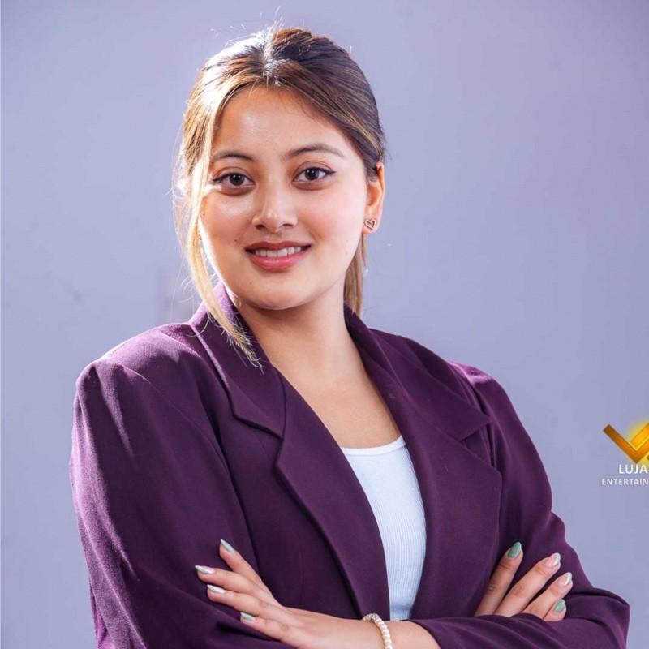

Nushla Pradhan
nushlapradhan_2026@depauw.edu |
765-712-2973 |
LinkedIn

Skills
- Programming Languages: Python, Java, JavaScript, C++, HTML/CSS
- AI/ML Technologies: TensorFlow, Machine Learning, Deep Learning, VR/AR Integration
- Tools & Platforms: GitHub, Tableau, Microsoft Office, Adobe Creative Suite, BigTree CMS
- Soft Skills: Communication, Leadership, Event Coordination, Community Engagement
Work Experience
-
Web Development Intern | DePauw Communications & Marketing Office
05/2025 - Present
- Optimize and maintain 1,500+ university web pages using BigTree CMS.
- Execute accessibility audits and implement WCAG compliance improvements.
-
Machine Learning Research Intern | Computing Research Association
05/2024 - 08/2024
- Developed deep learning models for VR-based ASL recognition system using TensorFlow.
- Designed data protocols and analyzed SLR performance from 50+ participants.
-
Alumni Database Intern | Robert G. Bottoms Alumni Center
08/2023 - 05/2025
- Maintained 15,000+ alumni records in Abila Millennium.
- Automated workflows, reducing update time by 20%.
-
Mental Health Peer Educator | DePauw Counseling Services
08/2024 - 05/2025
- Launched mental health campaigns, driving 30% student engagement increase.
- Coordinated 8+ workshops reaching 200+ students.
Projects
-
Xplore Program | TechPoint (06/2024 - 07/2024)
- Completed competitive fellowship (3% acceptance) working on 6+ data analytics simulations using Python & ML.
-
DeFeasts Project | HTML, CSS, JavaScript
(View Project)
- Led team to build a restaurant recommendation web app using React, Node.js, MongoDB, reducing wait times by 62%.
Leadership
- Chair | DePauw Women in Computer Science (08/2023 - 05/2025)
- Directed professional programming for 50+ students, achieving 85% satisfaction.
- President | DePauw International Students Association (08/2024 - 05/2025)
- Managed $15,000 budget & organized 10+ cultural events for 400+ students.
- Resident Assistant | DePauw Housing & Residence Life (08/2023 - 05/2025)
- Mentored 42 residents, created 15+ programs with 90% participation.
Education
-
DePauw University | Bachelor of Arts, Computer Science major, Business Analytics minor
Graduation: 05/2026
GPA: Cum. 3.74 / Major 3.82
- Honors: DePauw Merit Scholarship, Science Research Fellow, Outstanding Leadership Award
- Involvements: CS Honor Society, Dean’s List every semester
More About Me